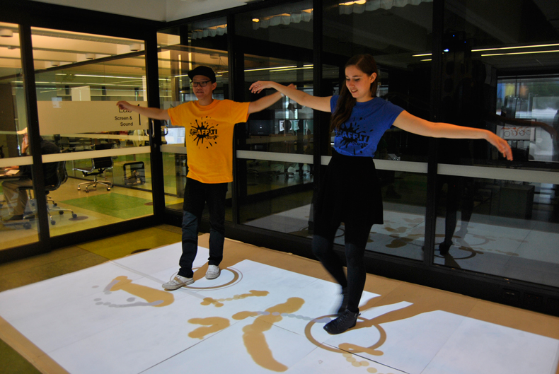
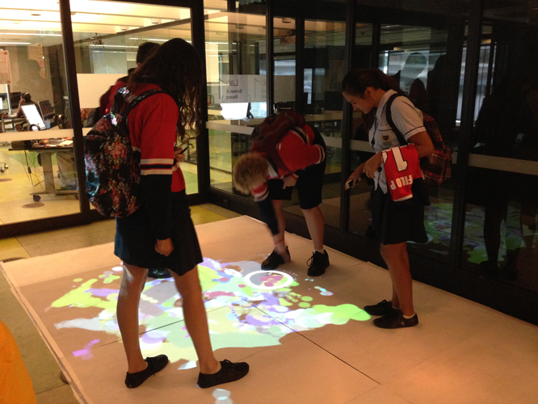
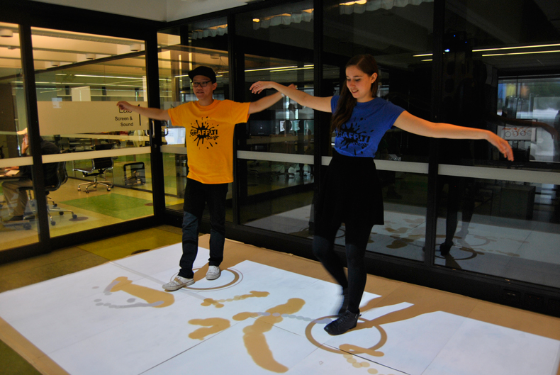
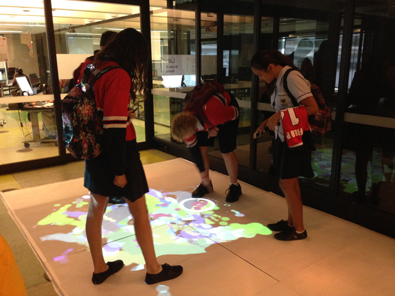
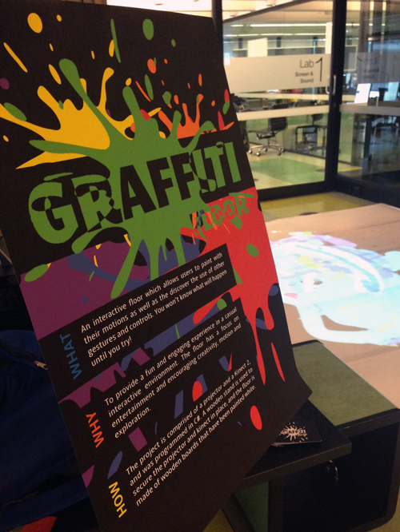
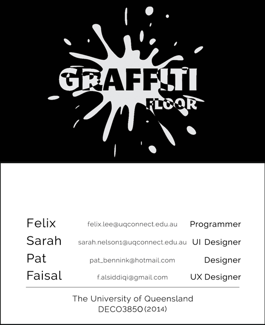
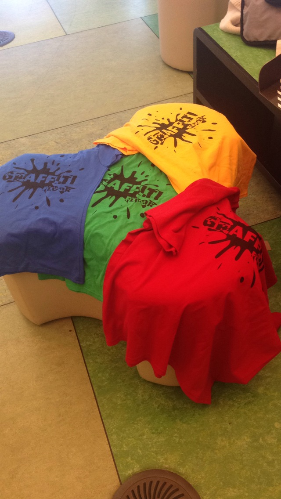
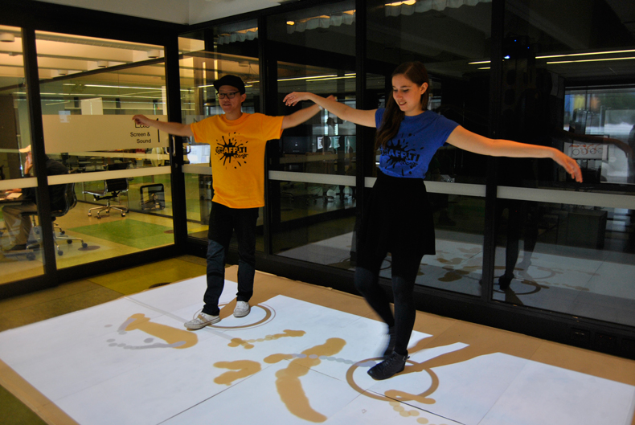
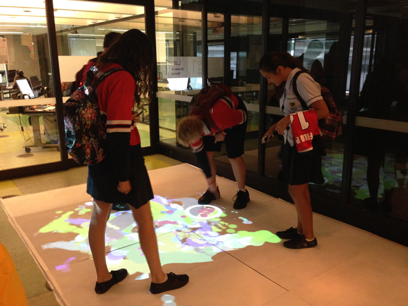

A week-by-week breakdown of the process of development of the project can be found in the Online Reflective Journal on the Previous Outputs page.
Most of the work on the project was done from Week 6 onwards once we had settled on the idea of the Graffiti Floor. We set up the projector and the Kinect on a make-shift stand, hooked it up to a computer running Windows 8.1 and started getting the basic tracking and drawing working. After that it was mainly a matter of adding features and refining the graphics. We experimented with using brushes (as in semi-transparent images) for painting with, but didn't end up going with them as lines drawn with simple circles were easier to work with and looked good as they were.
Here's a video showing the brushes that we didn't end up using:
Also involved in the process was a trip to Bunnings to get the wood for the Kinect stand, making the stand and buying, painting and taping together the boards for the floor.
I designed the graphics for the poster, logo and t-shirts, and Felix helped with the design of the business card. These helped to give our project a theme and a visual presence.
  Eventually it came time for the exhibition. It was a long but exciting day, starting off with setting up, then showing our project for seven hours to school groups, members of the public, friends and our lecturer and tutors. It was exciting seeing the project being used and the enjoyment that people got out of it. We got some very positive feedback, which was encouraging, as well as discovered areas for improvement in the design. In particular, more sound effects (such as when someone jumps) should be incorporated, and the icons should have done something when they were stepped on, as a lot of users tried to do this.
We weren't able to implement all the features we had dreamt up in the final product, but I was happy with how much we had achieved in the time given to us.
Most of the success criteria (displayed on the Product page) were fulfilled, making the project a success in our eyes.


"I like its potential capacity for performance, I think it has real world applications." - Kirsten
"This looks like a fun interactive learning platform with lots of educational applications particularly for children." - Josh
"Really engaging and fun, different interactions lead to a wide range of fun experiences." - David
"I really love it! Was really fun and has great features. It was a fun way of interacting! Good job!!"
"Loved it, honestly my favourite project of all and a very friendly crew! Thanks for the good times xox."
"Looks fun as bro!"
"Clever and pretty!"
"Really fun and super engaging. Awesome work."
"Like the interactions with other people. Gestures were lots of fun, probably more than the drawing."